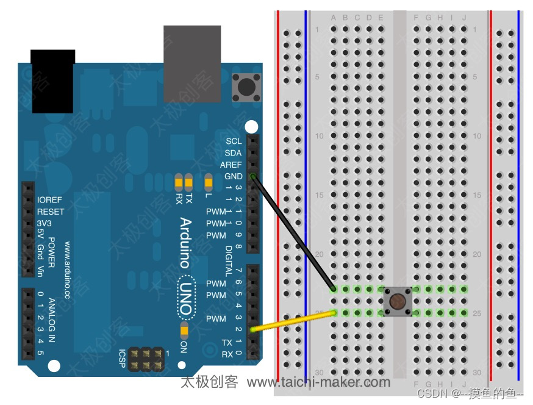
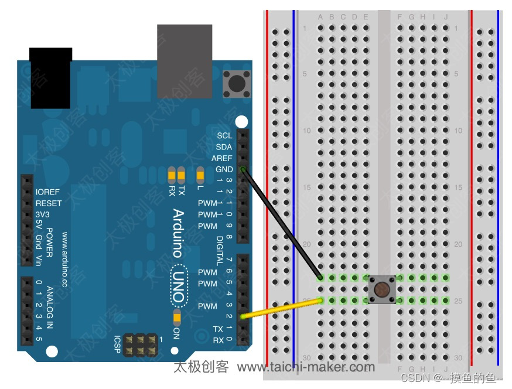

结构
setup
当Arduino程序开始运行时会调用setup()函数。通常我们在setup()函数中初始化一些变量、引脚状态及一些调用的库等。当Arduino控制器通电或复位后，setup函数会运行一次。
loop
loop()函数在setup()函数完成初始化后运行。loop函数是一个循环体，在Arduino启动后，loop()函数中的程序将会不断循环运行。
首先，你需要安装Arduino IDE，在Arduino官网下载即可。Arduino编程的学习当有了一定的C/C++基础后会变得很容易上手，（因此在后续内容中我们基本不再讲解C/C++中已有的语法规则）在我自身的学习过程中发现Arduino编程的学习在了解了基础知识后，最重要的就是把示例程序看懂，自己尝试着写一些程序，搭建电路。示例程序在下图所示的位置：

当Arduino程序开始运行时会调用setup()函数。通常我们在setup()函数中初始化一些变量、引脚状态及一些调用的库等。当Arduino控制器通电或复位后，setup函数会运行一次。
loop()函数在setup()函数完成初始化后运行。loop函数是一个循环体，在Arduino启动后，loop()函数中的程序将会不断循环运行。
HIGH和LOW的含义取决于Arduino的引脚设置。当引脚设置为输入模式 (INPUT)或为输出模式 (OUTPUT)时，含义有所不同。
当引脚设置为输入（INPUT）模式时，引脚为高阻抗状态（100兆欧）。此时该引脚可用于读取传感器信号或开关信号。
当引脚设置为输出（OUTPUT）模式时，引脚为低阻抗状态。也就是说Arduino可以向其它电路元器件提供电流，可驱动电机或是点亮LED
Arduino 微控制器自带内部上拉电阻。如果你需要使用该内部上拉电阻，可以通过pinMode()将引脚设置为输入上拉（INPUT_PULLUP）模式（相当于将该引脚初始化为HIGH）。（上拉电阻：把一个不确定的信号通过电阻连接到高电平，是电信号初始化为高电平）
| 引脚模式 | HIGH | LOW |
| INPUT | 电压大于等于3V时返回HIGH | 电压小于等于2V时返回LOW |
| OUTPUT | 输出5V | 输出0V |
 

串行端口用于Arduino和个人电脑或其他设备进行通信。所有Arduino控制器都有至少一个串行端口（也称为UART或者USART）。个人电脑可以通过USB端口与Arduino的引脚0(RX)和引脚1(TX) 进行通信。你也可以通过Arduino开发环境软件中的[串口监视器](https://baike.baidu.com/item/%E4%B8%B2%E5%8F%A3%E7%9B%91%E6%8E%A7%E5%99%A8/7440144)来与Arduino 控制器进行串口通信，你只需要点击Arduino IDE软件中的“串口监视器”按钮就可以打开串口监视器。
available() 函数可用于检查设备是否接收到数据。该函数将会返回等待读取的数据字节数。
设置电脑与Arduino进行串口通讯时的数据传输速率（每秒传输字节数）。可使用以下速率：300, 600, 1200, 2400, 4800, 9600, 14400, 19200, 28800, 38400, 57600, or 115200。你也可以根据你所使用的设备而设置其他传输速率。
以ASCII码形式向串口发送数据，该函数有多种格式。整数的每一数位将以ASCII码形式发送。浮点数同样以ASCII码形式发送，默认**保留小数点后两位**。字节型数据将以单个字符形式发送。字符和字符串会以其相应的形式发送。例如：
Serial.print(78) 发送 “78”
Serial.print(1.23456) 发送 “1.23”
Serial.print(‘N’) 发送 “N”
Serial.print(“Hello world.”) 发送 “Hello world.”
此指令也可以通过附加参数来指定数据的格式。这个允许的值为：BIN (binary二进制), OCT (octal八进制), DEC (decimal十进制), HEX (hexadecimal十六进制)。**对于浮点数，该参数可以指定小数点的位数**。例如：
Serial.print(78, BIN) 发送 “1001110”
Serial.print(78, OCT) 发送 “116”
Serial.print(78, DEC) 发送 “78”
Serial.print(78, HEX) 发送 “4E”
Serial.println(1.23456, 0) 发送 “1”
Serial.println(1.23456, 2) 发送 “1.23”
Serial.println(1.23456, 4) 发送 “1.2346”
Serial.print(val)//Serial.print(val,format)
类似print()指令，但是有换行。
Serial.write(val)/Serial.write(str)/Serial.write(buf,len)
通过pinMode()函数，你可以将Arduino的引脚配置为三种模式(见上)
将数字引脚写HIGH（高电平）或LOW（低电平）
读取数字引脚的 HIGH(高电平）或 LOW（低电平）
本指令用于从Arduino的模拟输入引脚读取数值。Arduino控制器有多个10位数模转换通道。这意味着Arduino可以将0－5伏特的电压输入信号映射到数值0－1023。
将一个模拟数值写进Arduino引脚。这个操作可以用来控制LED的亮度, 或者控制电机的转速. Arduino每一次对引脚执行analogWrite()指令，都会给该引脚一个固定频率的PWM信号。PWM信号的频率大约为490Hz.
delay()函数可用于暂停程序运行。暂停时间可以由delay()函数的参数进行控制，单位是毫秒（1秒钟＝1000毫秒）。
delayMicroseconds()与delay()函数都可用于暂停程序运行。不同的是，delayMicroseconds()的参数单位是微秒（1毫秒＝1000微秒）。